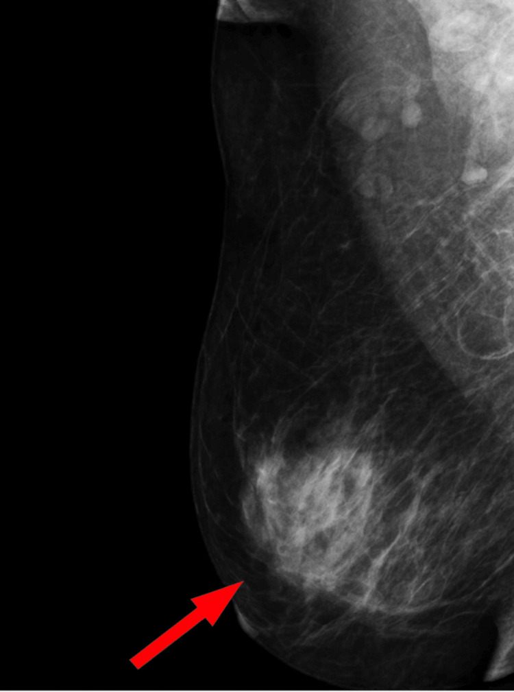
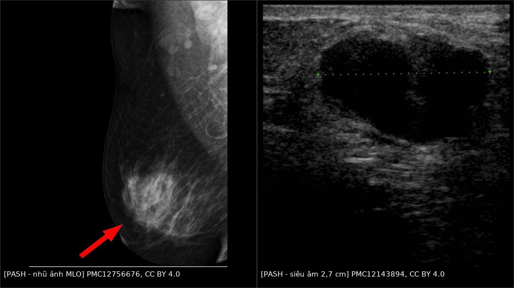
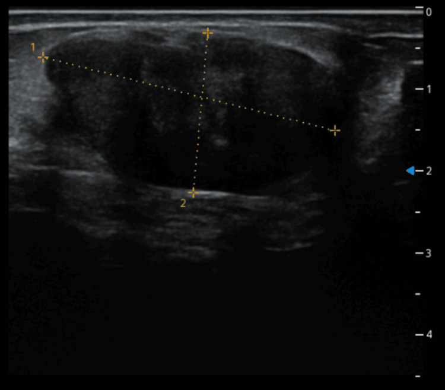
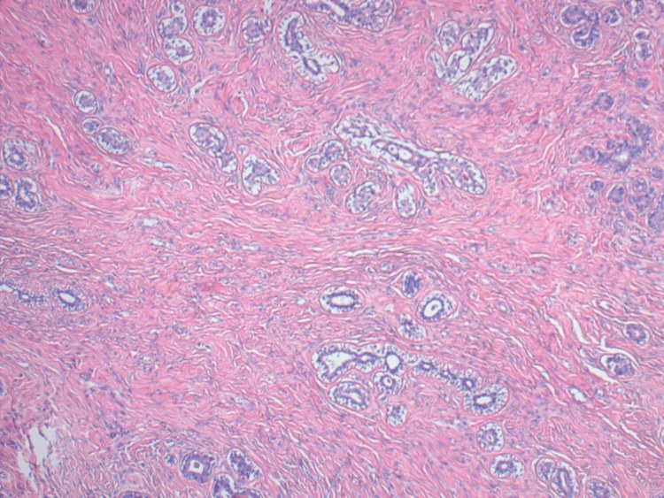

1614 — PASH: giả u mô đệm dạng mạch của vú / Pseudoangiomatous stromal hyperplasia (PASH)
Tags: pattern:khoi-vu pattern:mo-dem-xo pattern:gia-u-mach pattern:to-nhanh-khi-hormone vung:vu score:BI-RADS protocol:sinh-thiet-loi protocol:MRI-vu
Mức chắc chắn (certainty): tổng hợp y văn (literature synthesis) — 2 ca + thuật toán xử trí (Eur J Breast Health 2025, PMC12462723, CC BY-NC-ND — chỉ trích số/không dùng ảnh), ca PASH thể nốt có tăng kích thước theo thời gian (Cureus 2025, PMC12143894, CC BY 4.0), ca PASH + giãn ống tuyến có nhũ ảnh và mô học (Cureus 2025, PMC12756676, CC BY 4.0). Số liệu lấy nguyên từ bài gốc; phần suy luận vật lý được ghi rõ là suy luận.
Câu hỏi gốc của bài: một khối vú lành tính trên sinh thiết lõi nhưng to lên khi dùng hormone — PASH là gì, vì sao tên có chữ "mạch" mà không phải tổn thương mạch, khi nào theo dõi, khi nào mổ, và làm sao không bỏ sót phyllodes/ung thư nằm cùng?
1. Tổng quan bệnh học – cơ chế hình ảnh (TẠI SAO ảnh trông như vậy)
- Bản chất: PASH là tăng sinh lành tính của nguyên bào sợi cơ (myofibroblasts) xếp thành khe hở giống lòng mạch trong mô đệm gian tiểu thùy/quanh tiểu thùy — khe này KHÔNG có nội mô thật, chỉ là khoảng tách giữa các bó collagen. Vì vậy tên gọi "giả u mạch" (pseudo-angiomatous) mô tả hình thái giống mạch, không phải bệnh mạch máu.
- Hóa mô miễn dịch chốt bản chất: CD34 dương (nguyên bào sợi cơ), CD31 âm (không phải nội mô) (PMC12462723); thụ thể estrogen/progesterone dương ~95% → giải thích vì sao tổn thương phụ thuộc hormone.
- Dịch tễ – ngưỡng định lượng:
- PASH gặp ở ~6% các sinh thiết vú vì tổn thương lành tính khác; tới 23% trong loạt 200 mẫu sinh thiết liên tiếp (PMC12462723). Tức phần lớn PASH là phát hiện vi thể, không có khối.
- PASH thể nốt (mass-forming) chỉ 1–2% (PMC12143894, PMC12756676).
- PASH hay đi kèm tổn thương khác: 60,4% kèm tổn thương biểu mô lành, 25,6% kèm tăng sản không điển hình (loạt 70 ca, trích trong PMC12462723); PASH có mặt trong 70% của 335 u phyllodes và khi đó gắn với độ mô học thấp hơn, nguy cơ ác tính và tái phát thấp hơn (PMC12462723).
- Tiến triển: 16,6% ca tăng thể tích sau theo dõi trung vị 26 tháng (loạt 66 ca, trích trong PMC12462723).
- Tái phát sau cắt: 5–22% (tới 21%), cao hơn khi cắt không trọn (PMC12143894, PMC12756676).
- Yếu tố hormone: ca 26 tuổi và 37 tuổi đều đang dùng tránh thai hormone; ở người chuyển giới dùng testosterone kéo dài (trung vị 17 tháng) tỉ lệ PASH giảm có ý nghĩa (p < 0,001); ở nam thường gắn với gynecomastia (PMC12462723).
- TẠI SAO hình ảnh trông như vậy (vật lý + mô bệnh):
- Nhũ ảnh: đậm độ khu trú, bờ có thể rõ hoặc không rõ. PASH là mô đệm xơ đặc thay mỡ → hấp thụ tia X nhiều hơn mỡ → đậm độ. Vì không phải khối có vỏ, bờ thường hòa với mô tuyến xung quanh; ca PMC12756676 mô tả "vùng đậm độ mô đệm khu trú", không phải khối tròn điển hình.
- Siêu âm: giảm hồi âm, đồng nhất, đa thùy. Mô đệm xơ đặc phản âm kém hơn mỡ; không có vôi hóa/không có hoại tử nên không có bóng lưng mạnh. Ca PMC12143894: khối 2,7 cm, bờ đa thùy, giảm hồi âm, ban đầu bị đọc là fibroadenoma — vì không có dấu hiệu nào riêng của PASH trên siêu âm.
- T2 giảm tín hiệu/dải tối: collagen có thời gian T2 ngắn → các dải xơ nổi bật tối trên nền mỡ sáng và mô tuyến trung gian. Đây là dấu hiệu gợi ý mô đệm xơ, nhưng không đặc hiệu (fibromatosis, sẹo, hoại tử mỡ cũng tối). (Suy luận vật lý từ mô học; nguồn đã đọc không đưa số T2 cụ thể.)
- Ngấm thuốc: mô đệm xơ ngấm chậm và dai dẳng, thường không washout mạnh (suy luận từ thành phần xơ; nguồn đã đọc không đưa số động học riêng của PASH); nhưng vì PASH thường nằm cùng fibroadenoma/phyllodes, động học có thể lai giữa hai thành phần → động học không dùng để chốt.
- Vì sao "to nhanh" mà vẫn lành: PASH tăng sinh theo hormone (thai, tránh thai, HRT) → thể tích tăng thật nhưng không xâm lấn. Ca PMC12143894: 2,7 cm (2022) → 3,67 × 1,95 cm (2024) trong 2 năm, mô học vẫn lành. Vì vậy "to lên" là lý do để đánh giá lại và cắt nếu có triệu chứng, không tự động là ác tính — nhưng cũng không được bỏ qua vì phyllodes/ung thư có thể nằm cùng.
2. Mẫu hình (pattern) + chẩn đoán phân biệt theo bối cảnh (gamut)
- Khuôn 1 — Khối oval/đa thùy, bờ rõ, giảm hồi âm đồng nhất, không vôi hóa, nữ tiền mãn kinh. Gamut: PASH thể nốt vs fibroadenoma vs phyllodes lành vs hamartoma. Chốt: mô học + CD34/CD31; hình ảnh không phân biệt được PASH với fibroadenoma (2 ca PMC12462723 đều được chẩn đoán PASH trên lõi nhưng sau cắt là fibroadenoma có PASH).
- Khuôn 2 — Vùng đậm độ/mô đệm khu trú, bờ không rõ, không có khối trên siêu âm. Gamut: PASH lan tỏa vs sẹo/mô xơ sau mổ vs fibromatosis vs ung thư thể không đặc (NST) vs diabetic mastopathy. Chốt: so phim cũ + mô học; nếu mới xuất hiện và lớn dần → sinh thiết.

Nhũ ảnh MLO: vùng đậm độ mô đệm khu trú bờ hòa lẫn (đánh dấu), tương ứng vị trí sinh thiết xác nhận PASH; nhu mô xung quanh có giãn ống tuyến. Tổn thương không có vỏ, nên bờ không rõ — đây là lý do hình ảnh hay bị đọc thành bất đối xứng không đặc hiệu. Nguồn: Swarnkar A et al., Cureus 2025, Fig. 3, CC BY 4.0.- Khuôn 3 — Khối to nhanh khi mang thai/cho con bú/dùng tránh thai/HRT. Gamut: PASH phụ thuộc hormone vs fibroadenoma thai kỳ vs phyllodes vs ung thư (hiếm nhưng phải loại) vs áp-xe/viêm. Chốt: siêu âm + sinh thiết lõi; ngừng hormone rồi đánh giá lại sau 6 tháng với tổn thương nhỏ, không triệu chứng (PMC12462723).
- Khuôn 4 — PASH "tình cờ" trên lõi sinh thiết vì lý do khác, không thấy tổn thương trên hình ảnh. Gamut: PASH vi thể (tới 23% mẫu) vs PASH là thành phần của tổn thương chính. Chốt: không điều trị PASH vi thể; điều trị theo tổn thương chính.
- Khuôn 5 — PASH trong u phyllodes hoặc fibroadenoma (không phải khối PASH thuần). Gamut: phyllodes + PASH vs fibroadenoma bị PASH xâm lấn mô đệm vs PASH thuần. Chốt: tìm cấu trúc dạng lá (leaf-like), mật độ tế bào đệm, phân bào — PASH có mặt ở 70% u phyllodes nên đừng dừng ở chữ PASH.
- Khuôn 6 — Khối vú ở NAM to lên / người chuyển giới dùng hormone. Gamut: PASH trong gynecomastia vs ung thư vú nam vs lipoma. Chốt: sinh thiết; PASH ở nam thường gắn gynecomastia (PMC12462723).
3. Bảng so sánh phân biệt (ma trận đối chiếu)
| Thực thể (entity) | Hình ảnh điển hình (nhũ ảnh / siêu âm / MRI) | Chốt vào (rule-in) | Chốt loại (rule-out) | Gợi ý xác nhận |
|---|---|---|---|---|
| PASH thể nốt | Nhũ ảnh: đậm độ khu trú, bờ rõ hoặc hòa lẫn; siêu âm: khối giảm hồi âm, đa thùy, đồng nhất, không vôi hóa; MRI: dải T2 tối trong khối, ngấm chậm–dai dẳng | Mô học: khe giống mạch trong mô đệm xơ + CD34(+)/CD31(−) + ER/PR(+) | CD31(+) hoặc có lòng mạch thật có hồng cầu → tổn thương mạch (bài 1602), không phải PASH | Lõi 14G + IHC CD34, CD31, ER/PR; cắt trọn nếu triệu chứng |
| Fibroadenoma | Oval, bờ rõ, đồng nhất, có vách; nhũ ảnh khối đậm độ bờ rõ; không xâm lấn | Mô học: thành phần biểu mô + đệm, không có khe PASH lan rộng; tuổi trẻ | Có khe PASH lan rộng trong đệm + CD34(+) mạnh → PASH (hoặc FA có PASH) | Lõi; theo dõi nếu < 2 cm, không triệu chứng |
| Phyllodes (u diệp thể) | Khối lớn, lớn nhanh, đa thùy, khe (clefts); MRI dải T2 sáng trong khối; có thể da căng, tĩnh mạch nổi | Cấu trúc dạng lá + tăng sinh đệm + phân bào; PASH có mặt 70% ca | Khối nhỏ, đồng nhất, không có lá không loại trừ hoàn toàn — cần mô học | Cắt trọn có bờ; không sinh thiết rồi theo dõi khối lớn |
| Hamartoma vú | Khối bờ rõ, chứa mỡ + tuyến + xơ; nhũ ảnh có thể thấy mỡ trong khối; siêu âm hỗn hợp hồi âm | Có thành phần MỠ trong khối (nhũ ảnh/MRI) | Khối hoàn toàn đặc, không mỡ → không phải hamartoma | MRI/so phim; cắt nếu to |
| Ung thư biểu mô thể nhầy (mucinous) | Bờ đẩy, T2 rất sáng (nhầy), ngấm chậm tăng dần; có thể giống khối lành | T2 rất sáng + ngấm chậm + tuổi lớn | T2 tối/dải xơ + CD34(+) đệm → nghiêng PASH | Lõi + ER/PR/HER2; không theo dõi khối mới ở nữ > 40 tuổi |
| Fibromatosis (desmoid) vú | Khối cứng, bờ xâm lấn (spiculated), có thể co kéo da/núm; T2 tối, ngấm mạnh | Xâm lấn cơ ngực + bờ spiculated + tế bào cơ trơn | Bờ rõ, không xâm lấn, CD34(+) khe → PASH | Lõi + beta-catenin; cắt/ theo dõi theo ngoại |
| Diabetic mastopathy | Khối giảm hồi âm bờ không rõ, bóng lưng; MRI ngấm yếu, muộn, không tạo khối (PMC13425464) | ĐTĐ týp 1 lâu năm + xơ–lympho quanh tiểu thùy, không vi khuẩn | Ngấm mạnh + washout + hạch bất thường → không phải diabetic mastopathy | Lõi; hội chẩn mô bệnh |
| Sẹo/mô xơ sau mổ–xạ | Đậm độ/co kéo đúng vị trí mổ, thay đổi theo thời gian; MRI ngấm giảm dần | Vị trí khớp sẹo + ổn định/giảm theo thời gian | Ngấm tăng dần hoặc khối mới ngoài vùng sẹo → sinh thiết | So phim cũ; MRI |
- Ảnh ghép đối chiếu (nhũ ảnh + siêu âm):

Trái: nhũ ảnh MLO — vùng đậm độ mô đệm khu trú (mũi tên), bờ hòa lẫn, sinh thiết xác nhận PASH. Phải: siêu âm — khối giảm hồi âm đa thùy 2,7 cm, ban đầu bị đọc là fibroadenoma, sau đó to lên 3,67 cm trong 2 năm, cắt trọn xác nhận PASH thể nốt. Ảnh ghép letterbox, CC BY 4.0 (PMC12756676 + PMC12143894).4. Protocol chẩn đoán – xử trí + lưu đồ
- Bước 1 — Siêu âm tuyến vú: đo 3 chiều, mô tả bờ, đa thùy, hồi âm, vôi hóa, mạch Doppler. Ghi nhận vị trí đối chiếu với nhũ ảnh. Siêu âm không phân biệt được PASH với fibroadenoma → không chốt bằng siêu âm.
- Bước 2 — Nhũ ảnh 2D ± DBT: tìm đậm độ khu trú/bất đối xứng, vi vôi hóa (PASH có thể kèm giãn ống tuyến/viêm quanh ống — ca PMC12756676 có giãn ống và viêm quanh ống). Phân BI-RADS theo tổn thương thấy được, không theo chẩn đoán mô học.
- Bước 3 — MRI vú (khi không kết luận hoặc cần bản đồ trước mổ): T2FS, DWI/ADC, DCE. Đọc dải T2 tối (gợi ý xơ), kiểu ngấm (chậm–dai dẳng nghiêng lành), có thành phần khác không (nhú trong nang, khe phyllodes).
- Bước 4 — Sinh thiết lõi 14G: bắt buộc với khối ≥ 2 cm, khối mới, khối lớn nhanh, hoặc tổn thương không điển hình. Bắt buộc IHC: CD34, CD31, ER/PR để (1) xác nhận bản chất đệm, (2) loại tổn thương mạch thật (bài 1602), (3) đánh giá thành phần đi kèm. FNA không đủ (không thấy cấu trúc khe/đệm).
- Bước 5 — Xử trí theo thuật toán đã công bố (PMC12462723):
- Có triệu chứng / sờ thấy / khối lớn → cắt trọn (giải phẫu bệnh toàn bộ để loại phyllodes).
- Khối nhỏ, không triệu chứng → ngừng tránh thai hormone, đánh giá lại sau 6 tháng (siêu âm); nếu nhỏ lại/ổn định → tiếp tục theo dõi; nếu vẫn lớn → sinh thiết/cắt.
- PASH vi thể tình cờ, không có tổn thương trên hình ảnh → không điều trị, không cần cắt.
- Tái phát/nhiều ổ/không mổ được → tamoxifen ngoài nhãn (off-label); lưu ý tác dụng giảm dần sau ~3 tháng ở một ca và tác dụng phụ kháng estrogen (PMC12462723).
- PASH trong phyllodes → điều trị theo phyllodes (cắt trọn có bờ), không theo PASH.
- Ngưỡng hành động (tóm tắt): có triệu chứng/sờ thấy = cắt; < 2 cm, không triệu chứng = ngừng hormone + siêu âm lại 6 tháng; lớn lên dù đã ngừng hormone = sinh thiết/cắt; tái phát sau cắt = cân nhắc tamoxifen.
- BI-RADS (5th ed., 2013): PASH điển hình trên hình ảnh thường BI-RADS 3 (nếu khối bờ rõ, mới, chưa có mô học) nhưng khối lớn nhanh/không điển hình = BI-RADS 4 → sinh thiết. Không có hệ điểm riêng cho PASH — dùng BI-RADS của tổn thương.
flowchart TD
A[Khối/đậm độ mô đệm nghi PASH] --> B{Có triệu chứng hoặc sờ thấy hoặc lớn hơn 2 cm?}
B -->|Có| C[SINH THIẾT LÕI 14G + CD34/CD31/ER-PR]
B -->|Không| D{Đang dùng tránh thai hormone hoặc HRT?}
D -->|Có| E[Ngừng hormone + siêu âm lại sau 6 tháng]
D -->|Không| F[Siêu âm + nhũ ảnh theo dõi 6-12 tháng]
E --> G{Nhỏ lại hoặc ổn định?}
G -->|Có| H[Tiếp tục theo dõi định kỳ]
G -->|Không, vẫn lớn| C
C --> I{Mô học: khe giống mạch trong đệm xơ, CD34 dương, CD31 âm?}
I -->|Có| J{Có cấu trúc dạng lá, phân bào nhiều hoặc thành phần khác?}
J -->|Có| K[Điều trị theo phyllodes hoặc tổn thương chính - cắt trọn có bờ]
J -->|Không| L{Có triệu chứng hoặc khối lớn?}
L -->|Có| M[Cắt trọn - giải phẫu bệnh toàn bộ]
L -->|Không| H
I -->|Không, CD31 dương| N[Tổn thương mạch thật - xem bài 1602]
M --> O{Tái phát hoặc nhiều ổ?}
O -->|Có| P[Cân nhắc tamoxifen ngoài nhãn + theo dõi sát]
O -->|Không| H
5. Biến thể bình thường và cạm bẫy
- Cạm bẫy 1 — Cái tên đánh lừa: "pseudoangiomatous" khiến người đọc nghĩ đến u mạch và xếp vào gamut tổn thương mạch. PASH CD31 âm, không có lòng mạch thật → nếu IHC ra CD31 dương/ERG dương thì không phải PASH (bài 1602).
- Cạm bẫy 2 — Sinh thiết lõi đọc "PASH" nhưng khối thật là fibroadenoma: cả 2 ca trong PMC12462723 được chẩn đoán PASH trên lõi, sau cắt mới là fibroadenoma có PASH (5,2 cm và 5,6 cm). Vì vậy khối sờ thấy/có triệu chứng phải cắt trọn, đừng dừng ở kết quả lõi.
- Cạm bẫy 3 — Bỏ sót phyllodes: PASH có mặt trong 70% của 335 u phyllodes và gắn với độ mô học thấp hơn và tái phát thấp hơn — nghĩa là thấy PASH không loại trừ phyllodes. Phải tìm cấu trúc lá, mật độ đệm, phân bào, và cắt trọn khối lớn.
- Cạm bẫy 4 — "PASH vi thể = bệnh": tới 23% mẫu sinh thiết có PASH vi thể; không có khối trên hình ảnh thì không có gì để mổ. Điều trị theo tổn thương chính.
- Cạm bẫy 5 — Thai kỳ/cho con bú/HRT: PASH tăng theo hormone; khối to trong thai không đồng nghĩa ác, nhưng vẫn phải siêu âm + sinh thiết nếu không điển hình. Sau sinh/ngừng hormone, đánh giá lại trước khi quyết định mổ.
- Cạm bẫy 6 — Tái phát do cắt không trọn: tái phát 5–22%, cao hơn khi bờ không sạch → cắt trọn và theo dõi 6–12 tháng sau mổ.
- Cạm bẫy 7 — Nam giới: PASH ở nam thường nằm trong gynecomastia; đừng gọi "ung thư vú nam" chỉ vì khối dưới quầng vú, nhưng phải sinh thiết nếu khối cứng, lệch trục, có da co kéo.
- Biến thể bình thường: mô đệm xơ quanh tiểu thùy tăng nhẹ theo tuổi và PASH vi thể là phát hiện mô học, không phải bệnh; tuyến vú nam có mô đệm quanh ống — đừng nhầm với khối.
6. Tự lượng giá — Blind Quiz
Ca 1 — Nữ 34 tuổi, khối vú trái 3 cm, không đau, đang dùng tránh thai. Nhũ ảnh + siêu âm:
- Hỏi: (1) mô tả tổn thương trên hai phương tiện; (2) ba chẩn đoán phân biệt; (3) bước tiếp theo và vì sao không theo dõi đơn thuần?
Bấm để hiện đáp án (findings + chẩn đoán)
- Findings: nhũ ảnh MLO — vùng đậm độ mô đệm khu trú, bờ hòa lẫn; siêu âm — khối giảm hồi âm, đa thùy, đồng nhất, không vôi hóa, không bóng lưng.
- Chẩn đoán phân biệt: PASH thể nốt, fibroadenoma, phyllodes, (ít hơn) ung thư thể nhầy.
- Bước tiếp theo: sinh thiết lõi 14G + CD34/CD31/ER-PR; khối 3 cm, sờ thấy → cắt trọn theo thuật toán (triệu chứng/sờ thấy = mổ), vì lõi có thể đọc PASH trong khi khối thật là fibroadenoma hoặc phyllodes.
- Nguồn ảnh: PMC12756676 (nhũ ảnh, CC BY 4.0) + PMC12143894 (siêu âm, CC BY 4.0), ảnh ghép letterbox.
Ca 2 — Cùng bệnh nhân sau 2 năm: khối từ 2,7 cm thành 3,67 cm.

- Hỏi: (1) tốc độ tăng có buộc phải nghĩ ác tính? (2) yếu tố nào giải thích tăng? (3) xử trí?
Bấm để hiện đáp án (findings + chẩn đoán)
- Findings: khối 36,7 × 19,5 mm, bờ rõ, đồng nhất, giảm hồi âm, có mạch trong khối; so với 2,7 cm hai năm trước.
- Chẩn đoán: PASH thể nốt (cắt trọn xác nhận) — tăng do hormone, không phải chuyển dạng.
- Số liệu: 16,6% PASH tăng thể tích sau trung vị 26 tháng; tái phát sau cắt 5–22% (PMC12462723, PMC12143894).
- Xử trí: cắt trọn (khối > 2 cm, lớn lên) + theo dõi; nếu tái phát/nhiều ổ → cân nhắc tamoxifen ngoài nhãn.
- Nguồn ảnh: Abdelrazzak A et al., Cureus 2025, Fig. 2, CC BY 4.0.
Ca 3 — Mô học: các khoảng trống hình khe, lót bởi tế bào dẹt, trong mô đệm xơ; không có atypia.

- Hỏi: (1) đây có phải u mạch không? (2) hai dấu IHC chốt? (3) nếu CD31 dương thì nghĩ gì?
Bấm để hiện đáp án (findings + chẩn đoán)
- Findings: mô đệm xơ với khoảng trống hình khe nối tiếp nhau, lót bởi tế bào thoi lành, không atypia, không phân bào; xen lẫn thành phần biểu mô.
- Chẩn đoán: PASH — khe là khoảng tách giữa các bó collagen, không có nội mô thật.
- IHC chốt: CD34 dương (nguyên bào sợi cơ), CD31 âm (không nội mô); ER/PR dương ~95% (PMC12462723).
- Nếu CD31/ERG dương: nghĩ tổn thương mạch thật (hemangioma/angiosarcoma) → đọc bài 1602.
- Nguồn ảnh: Abdelrazzak A et al., Cureus 2025, Fig. 4, CC BY 4.0.
Bài liên quan chéo
- 1602 – Hemangioma & tổn thương mạch lành tính của vú vs angiosarcoma
- 510 – Vú & BI-RADS: nhũ ảnh, siêu âm & MRI
- 517 – Sinh thiết định vị vú và quản lý clip
- 513 – Tổn thương vú nguy cơ cao: ADH, ALH, FEA, LCIS, papilloma có atypia
- 514 – Ung thư vú: TNM, MRI lan rộng
- 1613 – Viêm tuyến vú u hạt & áp-xe vú
Ảnh
- Tên file:
1614_<slug>_<Modality>_<SourceID>.jpg. Nguồn + giấy phép từng ảnh trongimages/CREDITS.md. - Các ảnh dùng trong bài đều CC BY 4.0 → được phép ghép letterbox. Ảnh CC BY-NC-ND không dùng để ghép.
Disclaimer y tế: bài học dành cho đào tạo và tra cứu, không dùng để chẩn đoán độc lập. Khối vú lớn nhanh, cứng, hoặc không điển hình luôn cần mô học, kể cả khi sinh thiết trước đó trả về "tổn thương lành tính".